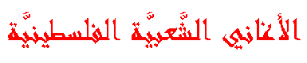

Palestinian Popular Songs
All occasions in the Palestinian life
have their own songs. Weddings are the most popular times when
people sing and dance on the tunes of the popular songs. Usually there
are certain singers (Zajjaleen) who lead the singing and the
audience repeats after them. However, one can find people singing
popular songs while working in the land or the factory.
As any other form of poetry, popular songs treat different aspects:
love, patriotism, wisdom, and others. In addition, there are different
forms of songs which differ in the tune and the way of singing as will be
seen below. Most of the songs introduced in this section are men's songs
in addition to the most popular women's song (Zaghareet). However,
this does not mean that women do not contribute to the Palestinian
folklore. Mr. Sa'ood Al-Asadi said, "The Palestinian folklore is a common
excellence of women and men."
There are several popular bands and singers (Zajjaleen) who are the
main source of energy for the revival of our popular songs. To list
some: El-Funoun
(Palestinian Popular Dance Troupe) in Ramallah, Ghassan Kanafani's Band
for Dabka in Bethlehem University, Jafra Band in Ramallah, and JuThoor
(Roots) Band in Bir Zeit University. There are also Islamic Art bands
who introduced the Islamic concepts to the popular songs, such as:
Yarmouk Band (Jordan),
AS-Sakhra Band (USA), and Ar-rawaby Band (Jordan). As far as popular
singers, one can find at least one in every village or town in Palestine.
To list some: Rajeh As-salfeety (died in 1990), Hammoudeh Al-farkhaawy
(Abu Bashir), Ibrahim Al-'arrany (Abu Bassam), Awni Barghouthi, Amjad
Arar, Mousa Hafeth, Mithqal Al-jayyousy, and Muhareb Theeb (Rababah
singer).
Few points must be added before going through the examples and forms of
songs:
1. Eventhough these are men's songs, women may also use the same forms
where they may change the tune or the contents of the songs.
2. The samples are written in the Palestinian dialect where I used (.gif)
files for the Arabic script. I also added transliteration and translation
of most of the samples.
Forms of Songs:
References:
- Abu Hadba, A.: Interview with Sa'ood Al-Asadi, Society &
Heritage, 24: 192, al-Bireh, Palestine (July 1994).
- Barghouthi, A.: Arabic Popular Songs in Palestine and Jordan,
Bir Zeit University, Bir Zeit, Palestine (1979).
- Barghouthi, A.: Chronicle of Palestinian 'Ataba, Bir Zeit
University, Bir Zeit, Palestine (1986).
- Barghouthi, A.: Chronicle of Palestinian Dal'ona, Bir Zeit
University, Bir Zeit, Palestine (1990).
'Ataba
'Ataba is the most popular song in Palestine. You can hear farmers,
workers, and shepherds singing 'ataba while they are doing their jobs.
However, weddings are the main environment for the songs.
As with the other forms of songs, 'ataba deals with all the subjects of
poetry.
Usually, the singer starts with the long sound of (Ooaaaff) then
the verses of 'ataba follow. 'Ataba is composed of four verses of
poetry. The first three end with the same word in sound but different
meanings. The fourth verse ends with a word that usually ends with a
sound like (aab, awa...)
Samples:
Sample #1,
Sample #2,
Sample #3,
Sample #4,
Sample #5
Dal'ona
Second to 'ataba, dal'ona is the most popular song. It is easier to compose
a dal'ona song than 'ataba because it does not require the similar sound of
the ends of the first three verses. However, like 'ataba, dal'ona has four
verses of poetry where the first three have similar endings and the fourth
usually ends with a sound like (oana).
Dal'ona is the song of the Palestinian popular dance, dabka, where
the dancers sing it along with the sound of shubbabah (flute),
yarghool, or mijwiz.
Samples:
Sample #1,
Sample #2
Zareef eT-Tool
Zareef eT-Tool has a fair popularity and it is also used in
dabka. Of course, the tune is differet from dal'ona.
Sample
Sahja/Saamir
This is a popular song in weddings where people stand in two lines facing
each other and sing. One line of people sings a verse and the other
line repeats the same verse. Sometimes, the second line starts a new
verse and changes the order of the flow of the song.
Sample
Zajal
Zajal is usually performed by a singer who makes up the song on the
spot. Those singers (one is zajjal) are professionals in singing
and people invite them to sing in weddings and most of them get paid
for singing. The audience will follow the zajjal with whatever
songs he sings.
Sample
Zaghareet
Zaghareet (one is zaghroot)are the most popular women songs which
can be compared to the men's 'ataba. The way a woman sings this form
is that she starts with a loud (heey eeeh) or (Aweeeha) sound,
then the words follow. When the woman says the last word the rest of the
women join with a loud (lololololololeeeeey) sound. There are
other forms of women songs, but the lack of resources caused me to only
mention this type.
Samples:
Sample #1,
Sample #2
 Go back to the
Palestinian Folklore Home Page
Go back to the
Palestinian Folklore Home Page